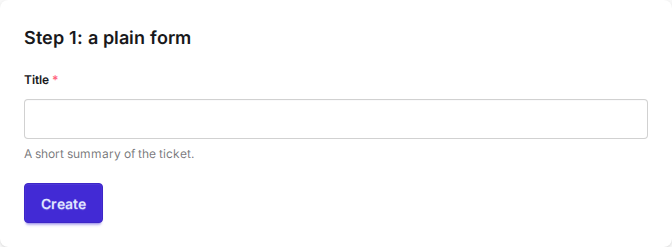
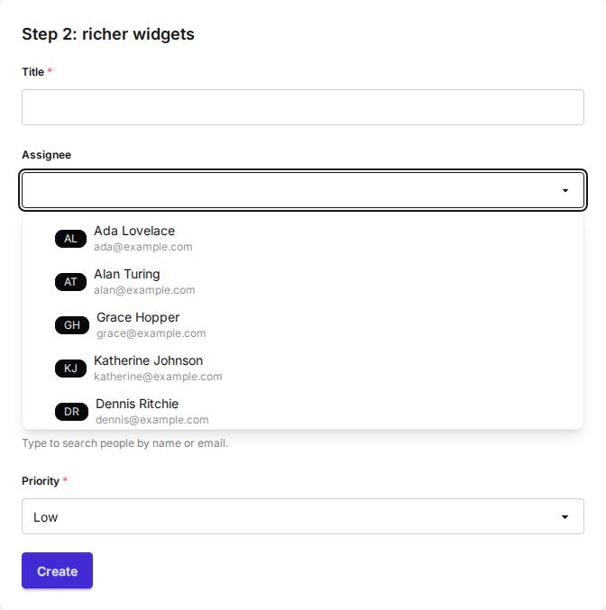
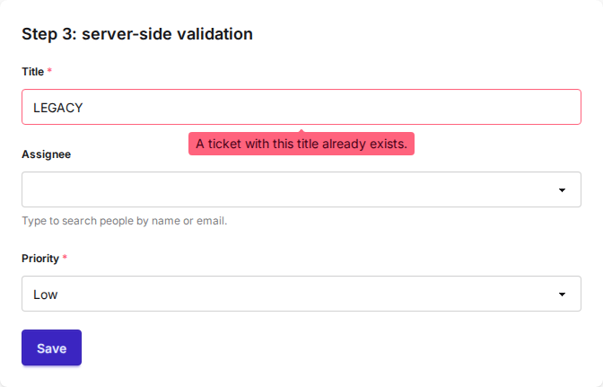
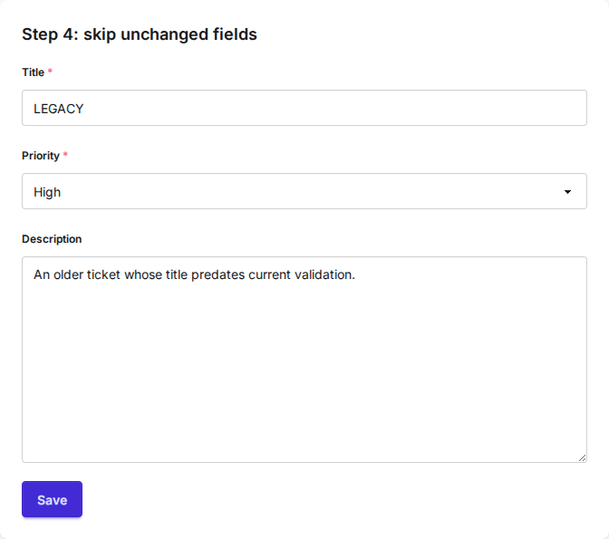
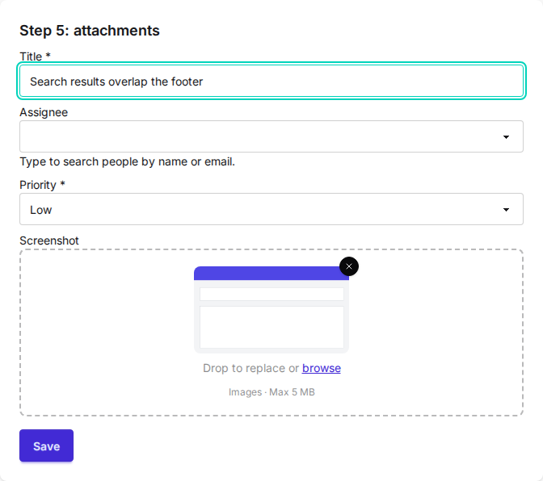
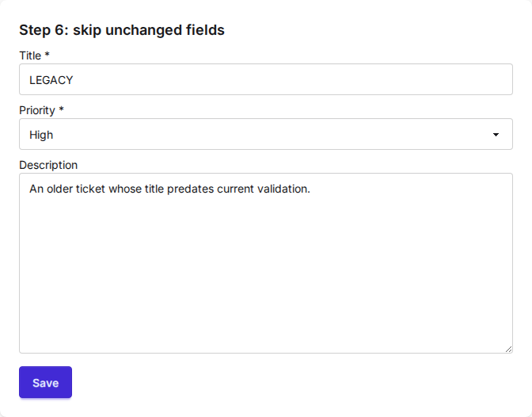

Cookbook¶
This guide builds one ticket form up from a single field to a searchable, server-validated form that saves, takes attachments, and edits existing records without re-validating untouched fields. Each step adds one capability, and every snippet is complete and works as shown. See the installation guide for the one-time CSS and JavaScript setup.
Step 1: the form is the center¶
The center of Formwork is forms. You render them the normal Django way, and the default widgets get automatic styling according to your DaisyUI theme.
# forms.py
class TicketTitleForm(forms.Form):
title = forms.CharField(max_length=200, help_text="A short summary of the ticket.")
<!-- template.html -->
{% load formwork %}
<form method="post">
{% csrf_token %}
{{ form }}
<button type="submit" class="btn btn-primary">Create</button>
</form>
{% formwork_js %}

{% formwork_js %} does nothing for a plain text field yet. It loads the
JavaScript behind the richer widgets and the htmx integration that the later
steps use, so it belongs in the base template from the start.
Step 2: richer widgets¶
Formwork ships widgets with extra styling and more modern behaviour, like
dropdowns with search. Here the assignee is a SearchSelect backed by a model,
with an initials badge and the person's email shown for each option. The
priority stays a plain ChoiceField; standard fields and Formwork widgets mix
freely in one form.
# forms.py
from django.utils.html import format_html
from django_formwork import FormworkForm, FormworkModelChoiceField
from django_formwork.widgets import SearchSelect
def assignee_icon(person):
initials = "".join(part[0] for part in person.name.split()[:2]).upper()
return format_html("<span class='badge badge-neutral badge-sm'>{}</span>", initials)
class TicketWidgetsForm(FormworkForm):
title = forms.CharField(max_length=200)
assignee = FormworkModelChoiceField(
queryset=Person.objects.all(),
widget=SearchSelect(search_fields=["name", "email"], search_decorator=None),
icon_from_instance=assignee_icon,
description_from_instance=lambda person: person.email,
required=False,
)
priority = forms.ChoiceField(choices=PRIORITY_CHOICES)
The dropdown searches on the server. Wire the endpoint once:

search_decorator is required. Pass an auth decorator such as login_required
to protect the endpoint, or None for a public one. icon_from_instance
returns safe HTML; keep its attributes single-quoted so they nest inside the
widget's markup.
Step 3: server-side validation, still MPA¶
Formwork makes direct server-side validation easy without leaving the typical MPA approach. It uses htmx and morph swaps: the form posts, the server re-renders it, and htmx morphs the whole form back in, keeping widget and focus state.
# forms.py
class TicketValidatedForm(TicketWidgetsForm):
def clean_title(self):
title = self.cleaned_data["title"]
if Ticket.objects.filter(title__iexact=title).exists():
raise forms.ValidationError("A ticket with this title already exists.")
return title
<!-- cookbook/_ticket_form.html -->
<form id="ticket-form" method="post"
hx-post="{% url 'ck-step3' %}"
hx-target="#ticket-form"
hx-swap="outerMorph"
data-formwork-dirty>
{% csrf_token %}
{{ form }}
<button type="submit" class="btn btn-primary mt-4">Save</button>
</form>
The form tag lives in a partial that step3.html wraps in the full page; the
later steps reuse it, with the posting URL passed in as a variable. The view
returns just the partial for htmx requests:
# views.py
def cookbook_step3(request):
if request.method == "POST":
form = TicketValidatedForm(request.POST)
form.is_valid() # render any errors; the happy path arrives in step 4
if request.headers.get("HX-Request") == "true":
return render(request, "cookbook/_ticket_form.html", {"form": form})
return render(request, "cookbook/step3.html", {"form": form})
return render(request, "cookbook/step3.html", {"form": TicketValidatedForm()})
{% formwork_js %} registers the formwork-morph htmx extension, so the error
tooltip appears without a full page reload and in-progress input is preserved.
No hx-ext attribute is needed. The non-htmx branch keeps the plain form post
working when JavaScript is unavailable. data-formwork-dirty highlights fields
you have changed since the page loaded; it becomes useful on the edit form in
step 6.

So far the view re-renders the form whether validation passed or not. Creating the ticket is the next step.
Step 4: save the ticket¶
Tie the form to the model with FormworkModelForm and the view gets a regular
form.save() happy path. is_valid() now runs the model's validators as well.
The assignee field and the clean_title rule move over from steps 2 and 3
unchanged.
# forms.py
from django_formwork import FormworkModelForm
class TicketCreateForm(FormworkModelForm):
assignee = FormworkModelChoiceField(
queryset=Person.objects.all(),
widget=SearchSelect(search_fields=["name", "email"], search_decorator=None),
icon_from_instance=assignee_icon,
description_from_instance=lambda person: person.email,
required=False,
)
class Meta:
model = Ticket
fields = ["title", "assignee", "priority"]
def clean_title(self):
title = self.cleaned_data["title"]
if Ticket.objects.filter(title__iexact=title).exists():
raise forms.ValidationError("A ticket with this title already exists.")
return title
# views.py
def cookbook_step4(request):
if request.method == "POST":
form = TicketCreateForm(request.POST)
if form.is_valid():
ticket = form.save()
url = reverse("ck-created", args=[ticket.pk])
if request.headers.get("HX-Request") == "true":
return HttpResponse(headers={"HX-Redirect": url})
return redirect(url)
if request.headers.get("HX-Request") == "true":
return render(request, "cookbook/_ticket_form.html", {"form": form})
return render(request, "cookbook/step4.html", {"form": form})
return render(request, "cookbook/step4.html", {"form": TicketCreateForm()})
htmx submits the form with fetch, so a normal redirect response would be
followed in the background and morphed into the form. The HX-Redirect header
tells htmx to navigate the browser instead. The non-htmx branch is the usual
post/redirect/get.

Step 5: attachments¶
Tickets carry screenshots. Add an ImageField to the model and swap its widget
for a drop zone: drag an image in and a thumbnail preview shows before the
upload.
# models.py
class Ticket(FormworkModel):
# title, assignee, priority, description ...
screenshot = models.ImageField(upload_to="screenshots/", blank=True)
# forms.py
from django_formwork.widgets import ImageDropZone
class TicketUploadForm(TicketCreateForm):
class Meta(TicketCreateForm.Meta):
fields = [*TicketCreateForm.Meta.fields, "screenshot"]
widgets = {"screenshot": ImageDropZone(max_size=5 * 1024 * 1024)}
Uploads change two things outside the form class. The form tag gains the
multipart attributes, and the view passes request.FILES:
<form id="ticket-form" method="post"
enctype="multipart/form-data"
hx-encoding="multipart/form-data"
hx-post="{% url 'ck-step5' %}"
hx-target="#ticket-form"
hx-swap="outerMorph"
data-formwork-dirty>

htmx does not read the form's enctype. Without
hx-encoding="multipart/form-data" it submits the fields urlencoded and the
file never reaches the server; enctype still covers the no-JavaScript
fallback, so keep both. max_size rejects oversized files in the browser only, server-side
checks stay your job. upload_to needs the usual MEDIA_ROOT and MEDIA_URL
settings.
Step 6: skip validation for unchanged fields¶
The steps so far create tickets. Editing an existing one runs into a different problem: re-running validation on fields the user did not touch can reject legacy data that is fine to leave alone. The example app seeds a ticket whose title today's validator would reject:
# models.py
def reject_legacy_title(value):
if value == "LEGACY":
raise ValidationError("Legacy titles are no longer allowed.")
class Ticket(FormworkModel):
title = models.CharField(max_length=200, validators=[reject_legacy_title])
# assignee, priority, description, screenshot ...
Set validate_dirty_only on a FormworkModelForm whose model inherits
FormworkModel; the model base brings the dirty-field tracking the form needs.
The field list trims to what this page edits; description has been on the
model all along.
# forms.py
class TicketEditForm(FormworkModelForm):
class Meta:
model = Ticket
fields = ["title", "priority", "description"]
validate_dirty_only = True
The view binds the form to the existing instance and saves as usual:
# views.py
def cookbook_step6(request):
ticket = Ticket.objects.order_by("pk").first()
if request.method == "POST":
form = TicketEditForm(request.POST, instance=ticket)
if form.is_valid():
form.save()
if request.headers.get("HX-Request") == "true":
return render(request, "cookbook/_ticket_form.html", {"form": form})
return render(request, "cookbook/step6.html", {"form": form})
return render(request, "cookbook/step6.html", {"form": TicketEditForm(instance=ticket)})
Editing only the description of the LEGACY ticket now validates and saves.
Unchanged fields skip their field validators, clean_<field> methods,
model-level validation, and unique and constraint checks; their stored values
carry through untouched. On create, the model's full_clean() covers every
field as usual. See the forms reference
for the exact rules.
This is the form data-formwork-dirty from step 3 was added for: it highlights
the fields you changed, which here is exactly the set the server will validate.
The two mechanisms are independent. The highlight is client-side display; the
decision to skip is made on the server by comparing the posted data against the
loaded instance, and it works the same without the attribute.

Going further¶
- Validation can run async. The form base classes accept async
clean_<field>andcleanmethods; async views callawait form.ais_valid()andawait form.asave(). See async validation. - Search does not need a model. A
search_choices_<field>(query, request)method on the form serves anySearchSelect,MultiSelect, orComboBox. See server-side search. - The full example
is a small task manager that combines these patterns with
MultiSelect,DatePicker, and a multi-step wizard.
The Forms, Widgets, and Views references document the details.